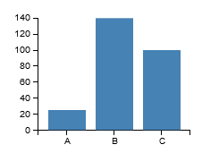

D3.js Data Visualization
Central PA Open Source Conference
November 1, 2014
What is D3.js?
News Stories/Analysis
Washington Post: Leagues of the World Cup
NY Times: Mapping the Spread of Drought Across the U.S.
A Super-simple SVG Chart
The Template Approach
var templateData = { listItems: [25, 75, 40]};
The D3 approach
var height = 150, width = 200;
d3.select('body').append('svg')
.attr('width', width)
.attr('height', height);
var data = [25, 75, 40];
var bars = svg.selectAll('rect').data(data);
bars.enter().append('rect') // new nodes
.attr('x', function(d,i) { return i * 40; })
.attr('y', function(d,i) { return height - d.value; })
.attr('width', 30)
.attr('height', function(d,i) { return d.value; });
Why not markup/templating?
Transitions
Data Setup
var stateData = [
{ state: 'PA', category: 'A', value: 25 },
{ state: 'PA', category: 'B', value: 75 },
{ state: 'PA', category: 'C', value: 40 },
{ state: 'NJ', category: 'A', value: 25 },
{ state: 'NJ', category: 'B', value: 140 },
{ state: 'NJ', category: 'C', value: 100 },
{ state: 'NY', category: 'B', value: 20 },
{ state: 'NY', category: 'C', value: 75 },
];
// underscore/lodash
var data = _(stateData).filter({ state: selectedState }).value();
Data Join & Callbacks
var bars = svg.selectAll('rect').data(data);
bars.transition().duration(duration) // existing nodes
.attr('x', function(d,i) { return i * 40; })
.attr('y', function(d,i) { return height - d.value; })
.attr('height', function(d,i) { return d.value; });
bars.enter().append('rect') // new nodes
.attr('x', function(d,i) { return i * 40; })
.attr('y', function(d,i) { return height - d.value; })
.attr('width', 30)
.attr('height', function(d,i) { return d.value; });
bars.exit().transition().duration(200) // "not found" nodes
.attr('y', height)
.attr('height', 0);
Chained Transitions
// data is array of 250 items with random x, y values, re-randomized with each click on the svg
var circles = svg.selectAll("circle").data(data);
circles
.transition().duration(500)
.attr('r', 3)
.transition().duration(1500)
.attr('cx', function(d) { return d.x; })
.attr('cy', function(d) { return d.y; })
.transition().duration(500)
.attr('r', 8)
circles.enter().append('circle')
.attr('cx', function(d) { return d.x; })
.attr('cy', function(d) { return d.y; })
.attr( { r: 8, fill: 'green' });
Scales
Examples so far have been "cheating"
What if data doesn't directly correlate to pixel height? What if height/width changes?
var data = [2, 7, 4];
// let D3 calculate how input data corresponds to output pixels
var yScale = d3.scale.linear().domain([1,10]).range([0,height]);
var xScale = d3.scale.ordinal().domain(['A', 'B', 'C']).rangeRoundBands([0, width]);
var bars = svg.selectAll('rect').data(data);
bars.enter().append('rect')
.attr('x', function(d) { return xScale(d.category); })
.attr('y', function(d) { return height - yScale(d.value); })
.attr('width', xScale.rangeBand())
.attr('height', function(d) { return yScale(d.value); });
Axes

var yAxis = d3.svg.axis()
.scale(yScale)
.orient('left');
var xAxis = d3.svg.axis()
.scale(xScale)
.orient('bottom');
svg.append('g').call(yAxis);
svg.append("g")
.attr("transform", "translate(0," + height + ")")
.call(xAxis);
Scale Types
- Linear
- Ordinal
- Date/Time
- Square Root
- Power
- Logarithmic
- Quantize/Quantile
- Category10 (colors)
- Category20 (colors)
Layouts


Your code still responsible for final shapes, but gives you the geometry/structure to render with
- Pie
- Tree
- Stack
- Partition
- Hierarchy
- Chord
- Bundle
- ...
Interactivity
Tree Layout
Drag Start/Drag End events
Drag events
As before, your code still responsible for final shape updates
var circleDragger = d3.behavior.drag()
.on("dragstart", function(d){
draggingNode = d;
d3.select(this).attr( 'pointer-events', 'none' );
})
.on("drag", function(d) {
d.x += d3.event.dx;
d.y += d3.event.dy;
var node = d3.select(this);
node.attr( { cx: d.x, cy: d.y } );
updateTempConnector();
})
.on("dragend", function(d){
draggingNode = null;
d3.select(this).attr( 'pointer-events', '' );
})
Related Libraries
D3 is fairly low-level and forms the foundation for many higher-level libraries
- NVD3.js
- C3.js
- Dimple.js
- DC.js (D3 + Crossfilter)